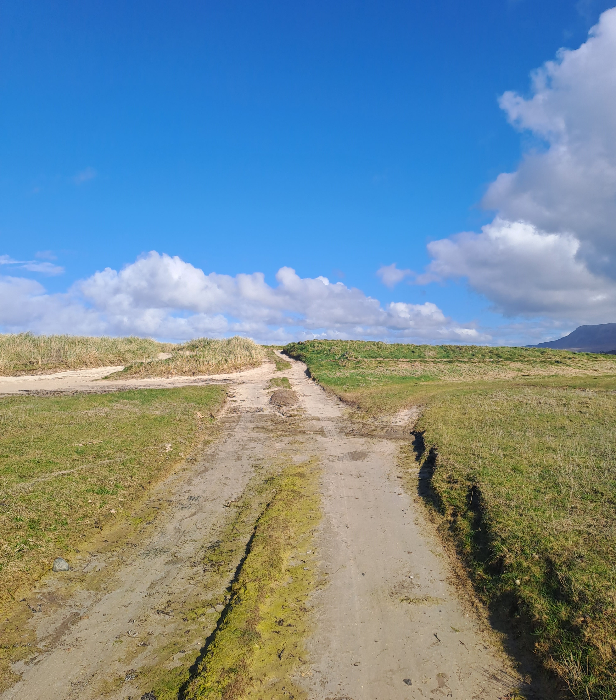

Timeline
Career timeline.
This page gives the chronological shape of my work history. It is not intended to repeat the full Experience page or the formal CV.
The pattern is one of steady movement from task-based operational work into information security, technical operations, cross-functional delivery, customer-sensitive service and regulated healthcare administration.
The consistent thread is practical coordination: bringing people, systems, records and next steps into clearer order.
What the timeline shows
Career themes, not a second CV.
Operational breadth — experience across technical, commercial, customer-sensitive and regulated-service environments.
Governance awareness — repeated exposure to confidential information, access control, audit-ready records and compliance-minded working.
Cross-functional coordination — work involving technical teams, managers, suppliers, customers, service users and operational colleagues.
Delivery under pressure — practical support during Brexit-related operational change and Covid-19 remote-working deployment.
Paths shape perspective, patience and practical judgement over time.

Current Direction
Where the timeline points now.
The direction now is toward business operations, project support, PMO support, service improvement, governance, documentation control, digital support and technical liaison roles.
The timeline matters because it shows the underlying pattern: I can work across sectors, learn tools and processes, keep records under control, communicate between groups and help practical work move forward.
Experience · Method · Workbench · CV · Contact